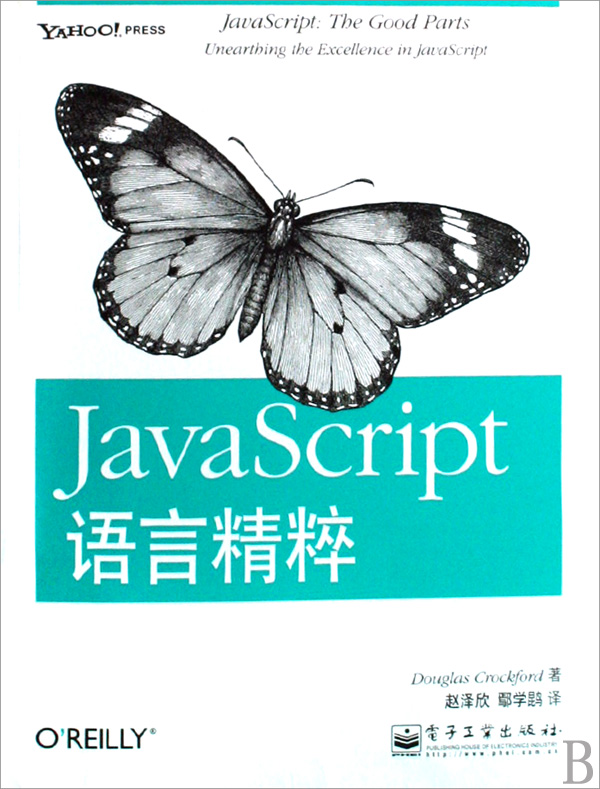
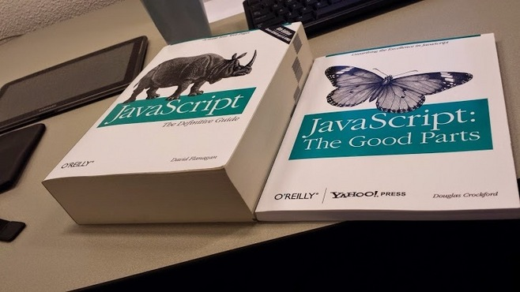
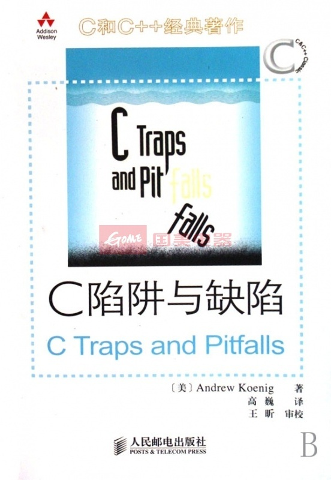

前言
|  |

|


C语言教材内容
- 多类型
unsigned short signed int long long - 格式化
%18.16lf%#0*X - 标准库
scanfprintf - 副作用
++--,=
用处少
- 同学到毕业时都只能面对一个黑框, 完成输入, 保存, 计算, 输出等计算器的任务
易错，不报错，各种运行时错误
- 教材使用自动类型转换, 规范中未定义结果, 不同电脑运算结果不同
- 同学们有过半的错误发生在
scanfprintf的使用上, 浪费时间
难用，无法理解，违背认知规律
- 考试靠记忆, 记住多种类型, 记奇怪的格式化语法, 记标准库使用方法
&, 记优先级与结合律 - 完全没有系统地介绍语法和思维方法
过程式，代码组织混乱, 运行逻辑混乱
scanf语句 不如get_int等表达式简单自由- 考试时使用副作用表达式
++ --, 计算无用的表达式, 分析混乱的代码
教程
2小时学习, 2小时实践, 更好地学完原教程所有内容
教程有保证, 每一句话都有用, 听得懂, 学得会
系统第介绍语法, 介绍恰当的代码风格, 避免浪费时间
引入辅助文件 litan.h, 推迟标准库的学习时间, 到函数指针后
实践时, 习题有用, 循序渐进, 效率高